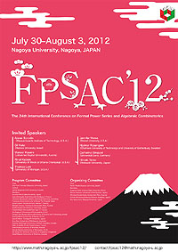

|  download fpsac12_poster.pdf (PDF/76KB) |
The 24th International Conference on Formal Power Series and Algebraic Combinatorics (FPSAC’12) will take place in Nagoya, Japan, at Nagoya University, July 30–August 3, 2012.
Topics include all aspects of combinatorics and their relations with other parts of mathematics, physics, computer science, and biology.
The conference will feature invited lectures, contributed presentations, poster session, problem session, and software demonstrations. As usual, there will be no parallel sessions.
The official languages of the conference are English, French.
Invited Speakers
- Alexei Borodin (Massachusetts Institute of Technology, U.S.A.)
- Gil Kalai (Hebrew University, Israel)
- Manuel Kauers (Johannes Kepler Universität, Austria)
- Rinat Kedem (University of Illinois at Urbana-Champaign, U.S.A.)
- Thomas Lam (University of Michigan, U.S.A.)
- Jennifer Morse (Drexel University, U.S.A.) (cancelled)
- Hjalmar Rosengren (Chalmers University of Technology / University of Gothenburg, Sweden)
- Catharina Stroppel (Universität Bonn, Germany)
- Hiroaki Terao (Hokkaido University, Japan)
Sponsors
- Graduate School of Mathematics, Nagoya University
http://www.math.nagoya-u.ac.jp/en/ - Japan Society for the Promotion of Science
http://www.jsps.go.jp/english/ - National Science Foundation
http://www.nsf.gov/index.jsp - Inoue Foundation for Science (Japanese site)
http://www.inoue-zaidan.or.jp/ - Daiko Foundation (Japanese site)
http://www1.s3.starcat.ne.jp/daiko-f/